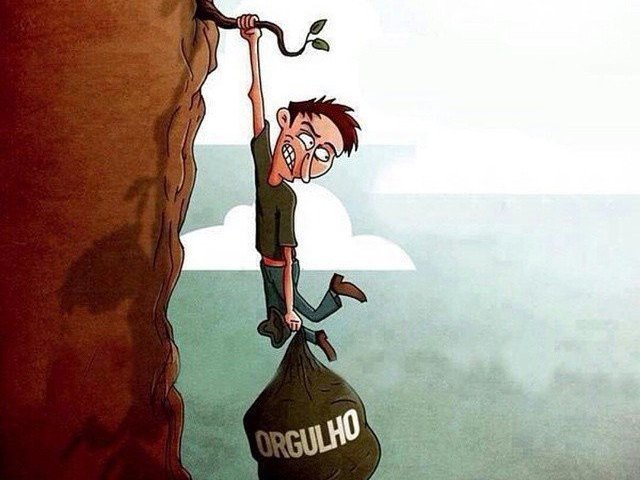

O lado negativo Pode ser uma motivação saudável, mas,
quando excessivo,
torna-se um vício destrutivo que
impede o aprendizado, gera insatisfação e prejudica relacionamentos.

Pode representar alegria e satisfação pelo sucesso,
ou a celebração de identidade e direitos e admitir erros
e atitudes que não agradam o nosso próximo.